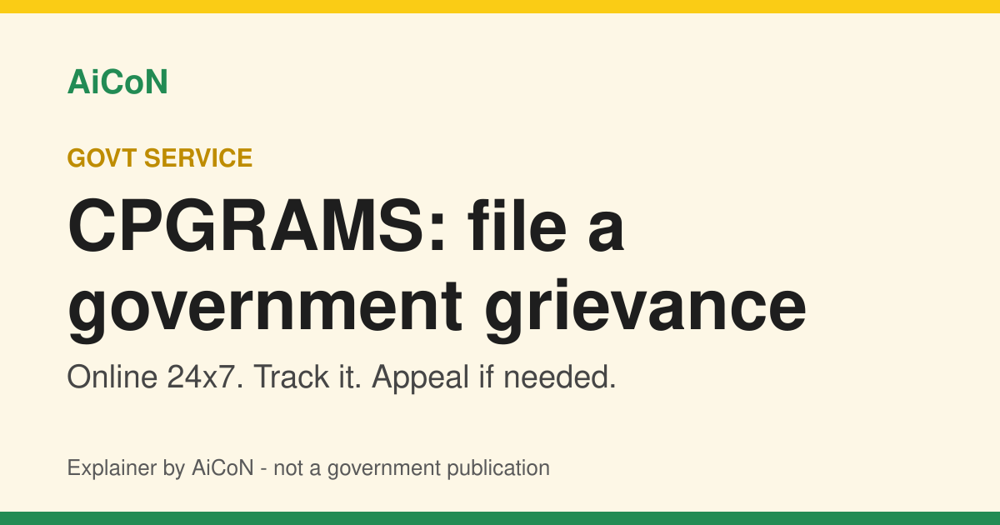

CPGRAMS: file a grievance with any government department online
CPGRAMS is the government's online portal for complaints about public services. It is open to citizens 24x7, gives you a registration ID to track the case, and lets you appeal if you are not satisfied.

What is CPGRAMS?
CPGRAMS stands for Centralised Public Grievance Redress and Monitoring System. The official portal, pgportal.gov.in, describes it as a single online platform where citizens can lodge grievances with public authorities on any subject related to service delivery. It is connected to all Ministries and Departments of the Government of India and to States. Each Ministry and State has role-based access to the system.
You can use it on the web, through a standalone mobile app from the Google Play store, or through the app integrated with UMANG.
Why it matters for Kerala and India
If a pension, passport, railway, bank, telecom or other public service in your area is stuck, a written grievance with a registration ID gives you a record to refer back to. The portal says it is connected to States as well, so it is a place to start whether the issue sits with a central office or a state one. Whether a particular State department responds through this system is for that department to handle.
What it does not cover
The portal lists issues that are not taken up for redress:
- RTI matters
- Court related or sub judice matters
- Religious matters
- Grievances of government employees about their service matters, including disciplinary proceedings, unless the employee has already exhausted the prescribed channels (the portal cites DoPT OM No. 11013/08/2013-Estt.(A-III) dated 31.08.2015)
How to file and follow a grievance, step by step
- Open pgportal.gov.in, or the CPGRAMS app on Google Play, or the CPGRAMS service inside UMANG.
- Sign in or register as a citizen, then choose the option to lodge a public grievance. Menu names can change, so follow the labels on the official page.
- Pick the Ministry, Department or organisation your complaint is about and describe the problem clearly: what happened, when, and what you want done. Attach papers if the form allows.
- Submit and save the unique registration ID you receive.
- Track the status any time with that registration ID.
- After closure, you can give feedback. The portal says that if the rating is "Poor", the option to file an appeal is enabled, and the appeal status can be tracked with the grievance registration number.
Cost and limits
| Availability | Online 24x7, as stated on the portal |
|---|---|
| Government fee | None. The portal says the government is not charging a fee for filing grievances |
| Assisted filing | The portal says any money paid by the public for filing a grievance goes only to M/s CSC, so assisted filing at a CSC may cost something. Filing yourself online avoids that |
| Escalation | For Ministries and organisations under the Directorate of Public Grievances (DPG), Cabinet Secretariat, you may seek DPG help if you get no satisfactory redress within a reasonable period |
Frequently asked questions
Is it free?
The portal says the government does not charge for filing grievances. Money paid to a CSC for help goes to M/s CSC only.
Can I track my complaint?
Yes, with the unique registration ID given when you file.
What if I am not happy with the reply?
After closure you can give feedback. A "Poor" rating enables the appeal option.
Can I use it for an RTI or a court matter?
No. Those are listed as not taken up for redress.
Sources: CPGRAMS official portal, pgportal.gov.in. Checked 6 October 2026. Explainer by AiCoN - not a government publication.